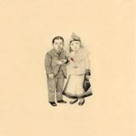
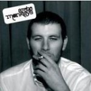
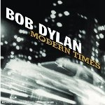
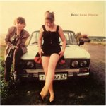
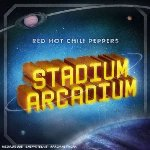
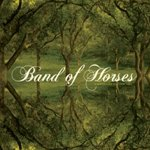
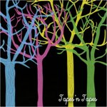
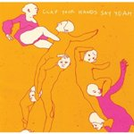

Najbolje ploče 2006. Rock i indie
 10. The Decemberists "The Crane Wife"
Obzirom da sam do ovog albuma stigao tek nedavno i da je izašao
krajem 2006 nalazi se "tek" na desetom mestu. Inače, savršena ploča u kojoj uživam sve više.
09 . Arctic Monkeys "Whatever people say I am , that's what I'm not"
Sjajan debi album, jedan od najboljih u poslednjih par godina. Imao sam priliku da momke i uživo vidim kako praše... i zaigram kao robot iz 1984. Engleski duhovito, iskreno i potpuno otvoreno, stil koji osvaja.

08. Bob Dylan "Modern Times"
Tako se to radi.
07. Beirut "Gulag Orkestar"

Kada smo već kod debi albuma, ovaj je delo sada 20godišnjeg momka. Ako ste se ikada
zapitali kako bi zvučao kros-over Smithsa i Bobana Markovića ovaj album možda nosi odgovor. Iznenadjenje godine.

06. RHCP "Stadium Arcadium"
Dupli album RHCP za mesto br.6 Ono što je očigledno je da su momci uložili puno truda,
sve je prilično utegnuto, sve na mestu...ipak, čini mi se da su najbolji albumi iza njih.
05. Band of Horses"Everything All the Time"
Prelepo, album koji mi je ulepšao inače sumoran decembar. Kako se opisuje ovakav album? Band of Horses imaju sve: muziku, reči, pesme, zvuk, emociju... mnogima će ova biti favorit minule godine. Savršeno!
 04. Tapes'n Tapes "The Loon"
Na momente me T'nT podsećaju na Pixies, češće na Pavement. Ovaj album i ide negde izmedju Trompe le Monde i Wowee Zowee, ali ipak na potpuno osoben način.
Subjektivno, ova ploča mi je možda i najdraža u prethodnoj godini, pokušavam da otkrijem zašto. Ima boljih, ali ako
zavolite T'nT teško da će biti dražih. Omaha je jedna od najlepših pesama prethodne godine. Još jedna savršena ploča iz 2006.

03. Clap Your Hands Say Yeah "Clap Your Hands Say Yeah"
Ako ćemo pošteno, ovo je ploča iz 2005. Ipak, izašla pred kraj godine, i to kao debi, primećena je tek u 2006., barem kada sam ja u pitanju. Sve, ali baš sve, je ovde kako treba. Mnoge je potpuno izbacilo iz takta pevanje na ovom albumu; mnogo je jako, jako, jako loših kritika upravo iz ovog razloga. Ipak, meni ni najmanje ne smeta - opet, ovde je sve baš tamo gde treba da bude. Pomalo luckaste pesme su ovde to samo uslovno rečeno, ovo je žurka koja traje i traje i traje. Na momente klaustrofobična, ali žurka. Na momente uvrnuta, ali sve vreme šarmantna. Sa nestrpljenjem očekujem novi album, najavljen za prvu polovinu 2007me.
02. Tom Waits "Brawlers, Bawlers & Bastards"
Tom Waits ima redak dar da pravi muziku koja ne stari. Ovaj album je najbolji dokaz - kolekcija muzike iz prethodnih godina (decenija) - sve funkcioniše kao na best of albumu, samo što nigde nema hitova. Da se razumemo, ovo može samo Tom Waits, trostruki album, praktično tri sasvim različita albuma: Brawlers - rock i blues ploča, Bawlers - balade i ispovesti od kojih suze oči i Bastards - ploča eksperiment. Ovo je mesto gde se svet završava i ponovo počinje. Za nekoga ko nikada nije upoznao Waitsa ovo može biti idealno predstavljanje. Pošto je u pitanju maestro, činjenica da ovde nema nijedne od dobro poznatih ranijih numera ne umanjuje potencijalni prvi utisak. Ovo je genijalna ploča i to je jasno od prvog do poslednjeg tona, svih 56 pesama, svih 130 minuta!
01. TV on the Radio "Return to Cookie Mountain"
Iz istih razloga zbog kojih mi je Arcade Fire "Funeral" najbolji rock album 2005te: muzika i priče van stega vremena i prostora. Zvuk toliko poseban i prepoznatljiv. Mešavina mnogo uticaja, stilova, sve savršeno logično, jednostavno i uzbudljivo. Ma, samo poslušajte!
Komentari
 kiko | 02.01.07 09:05
kiko | 02.01.07 09:05
Ko je ovaj lik sto se hvali sta je sve slusao na Hollywood Bowl? Kakav luzer.
 RSS feed
RSS feed
 sadržaji se objavljuju pod
sadržaji se objavljuju pod
Bravo za listu. Iako sam prakticno prestao da pratim muziku, samo ponesto sto uhvatim na radiju, na mojoj listi bi sigurno bilo mesta za SY i Rather Ripped... Mozda zato sto sam konacno uspeo da ih gledam ove godine i to je bilo apsolutno fenomenalno... TV on the Radio sam takodje gledao uzivo na Hollywood Bowl, kao predgrupu Massive Attack i malo su me razocarali... Ali, mislim da to nije bilo bas najbolje mesto za njihov koncert... Vive le rock...
Bob | 02.01.07 01:42